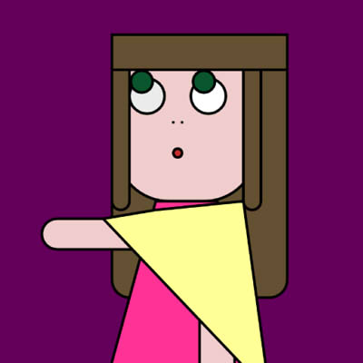

Autoretrato
En este trabajo nos dibujamos como caricaturas. Se trabajó en base a figuras geométricas como QUAD, RECT, POINT. Más el movimiento de los ojos que se realizan con el IF.

En base de unos de mis trabajos anteriores de espiral, se quiso lograr interactuar de distintas formas con este espiral, como cambiar las formas de la figura con el mouse, los colores con los sliders y con el sonido del micrófono logramos que un espiral varíe en su rotación, todo esto pensando en que el usuario lo modifique a su gusto.
En este trabajo nos dibujamos como caricaturas. Se trabajó en base a figuras geométricas como QUAD, RECT, POINT. Más el movimiento de los ojos que se realizan con el IF.
Para poder interactuar con el trabajo, se agregó unos sliders tanto para agregar como para quitar figuras dentro de un mismo radio, mientras la recursión sigue en movimientos circulares.
Se simuló un espiral en color verde agua, desde el centro están muy juntos y su color es mucho más intenso, mientras que al alejarse del centro, estos muestran su verdera forma de circulo y baja opacidad.
Se dibujaron líneas con las particulas de forma repetitiva, estas al chocar en la pared van en otra dirección como si fuera una pelota saltarina y deja su recorrido dibujado por todo el fondo blanco.
Como base tenemos simples líneas de diversos colores las cuales aparentan no tener función, sin embargo al clickear y arrastrar nuestro mouse por el sketch, estas pierden su forma original.
Para simular un circulo sin la necesidad de dibujar sus bordes, se dibujaron distintas líneas que van girando por toda su extensión y espacio determinado por COS y SIN, logrando hacer una ilusión óptica.
Mediante las herramientas de particles, ellipse y frame count, se logró realizar unas líneas punteadas que van cambiando de color tras llegar a un determinado. Con el tiempo estos van girando más rápido.

En base a la figura de un cuadrado, se quiso llevar a cabo una cubo hecho con simples paneles de colores, sin luz o dimensión. Siendo posible la interacción con este mediante el mouse X e Y.
Esto es una simple variación del trabajo de espiral color verde agua, simplemente cambiando la forma de los circulos y su color, dando como resultado un vacío de un sueño.